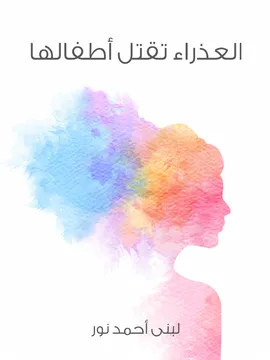

العذراء تقتل أطفالها

قراءة عربية أصلية محددة النطاق في الصفحات 10 إلى 15 من ملف PDF المرتبط، وليست تلخيصا كاملا للكتاب. نناقش ما تدعمه هذه المقاطع فقط.
صلاة على روح متوفاة: قصائد لُبنى أحمد نور
يفتح الديوان صفحاته الأولى بقصيدة «صلاة»، تخاطب فيها الشاعرة ربها في حسرة: لئن أكفرت بك الآن فكيف أصلي لك من أجل روحي المتوفاة؟ ولئن كفرت بك الآن وللأبد فكيف تستجيب؟ ثم تأتي «فتح القوس» لتقرب بين فتح قوس الكمان وتركه مفتوحًا وبين مساحات للترنح وأوقات للخفقان وفراغات للشجن، في بضعة أسطر تشبه الوشم على صفحة بيضاء. وفي «يا حمام» تكتب: أنا الإصغاء إلى صوتك، الإصغاء إلى إصغائك، وأنت صمت، بيننا هديل يسيل ونزف. قصائد قصيرة مركزة لا تستغرق الصفحة الواحدة منها أكثر من سطور، تعتمد التكثيف والصورة والنداء، وتمضي في فضاء العنوان الصادم نفسه: العذراء تقتل أطفالها. بهذه النبرة تضع لُبنى أحمد نور القارئ منذ السطور الأولى أمام شعر يجمع بين التضرع والتمرد، وبين المقدس واليومي الجريح، في لغة شفافة تختزل الجملة حتى تكاد تصبح همسة.
زاوية وحدود القراءة
قراءة موجزة من ص ١٠ إلى ص ١٥ من أصل ١٤٦ صفحة، تعرض قصائد «صلاة» و«فتح القوس» و«يا حمام»، لا الكتاب كاملًا.
الطبعة والقراءة
هذه النسخة من الكتاب صادرة ومتاحة مجانًا بموجب اتفاق قانوني بين مؤسسة هنداوي والسيدة الأستاذة لبنى أحمد نور.
تنزيل PDF المجاني ↓ القراءة والمصدر الرسمي ↗